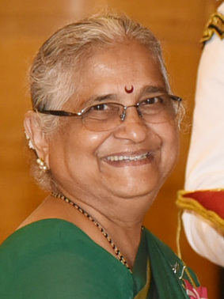

Introduction
Sudha Murty (born 19 August 1950) is an Indian educator, author and philanthropist who is chairperson of the Infosys Foundation. She is married to the co-founder of Infosys, N. R. Narayana Murty. Murty was awarded the Padma Shri, the fourth highest civilian award in India, for social work by the Government of India in 2006.Later in 2023, she was awarded the Padma Bhushan, the third highest civilian award in India
Early Life
Sudha Murty was born to a Kannada -speaking family on 19 August 1950 in Shiggaon,
Haveri in Karnataka, India, the daughter of R. H. Kulkarni, a surgeon, and his wife
Vimala Kulkarni, a school teacher. She was raised by her parents and maternal
grandparents. These childhood experiences form the historical basis for her first
notable work entitled How I Taught My Grandmother to Read, Wise and Otherwise and
Other Stories.[15] Murty completed a BEng in Electrical and Electronics Engineering
from the B.V.B. College of Engineering & Technology (now known as KLE Technological
University), and then a MEng in Computer Science from the Indian Institute of Science
Sudha Murty became the first female engineer hired at India's largest auto
manufacturer TATA Engineering and Locomotive Company (TELCO).[18] She joined the
company as a Development Engineer in Pune and then worked in Mumbai & Jamshedpur
as well. She had written a postcard to the company's Chairman complaining of the
"men only" gender bias at TELCO. As a result, she was granted a special interview
and hired immediately. She later joined Walchand Group of Industries at Pune as Senior Systems Analyst.
Sudha Murty married N. R. Narayana Murthy while employed as an engineer at
TELCO in Pune.The couple have two children, including fashion designer
Akshata Murty, who is married to the British Prime Minister Rishi Sunak.
Her siblings include Caltech astrophysicist Shrinivas Kulkarni and Jaishree
Deshpande (wife of Gururaj Deshpande) who co-founded the Deshpande Center for
Technological Innovation at MIT
Sudha Murty began her professional career in computer science and engineering.
She is a member of the public health care initiatives of the Gates Foundation.
She has founded several orphanages, participated in rural development efforts,
supported the movement to provide all Karnataka government schools with computer
and library facilities,and established Murty Classical Library of India at Harvard University
Murty is best known for her philanthropy and her contribution to literature in
Kannada and English. Dollar Bahu, a novel originally authored by her in Kannada
and later translated into English as Dollar Bahu, was adapted as a televised
dramatic series by Zee TV in 2001. Runa, a story by Sudha Murthy was adapted
as a Marathi film, Pitruroon by director Nitish Bhardwaj. Sudha Murthy has
also acted in the film as well as a Kannada film Prarthana
Bibliography
-
Computer lokadalli (2000),Hakkiya Teradali (2003),Guttondu Heluve (2006) ,Saamaanyralli Asaamaanyaru (2006),Athirikthe (2007),Tumula (2007),Yashasvi (2007) ,Runa (2008),Sukeshini Mattu Itara Makkala Kathegalu (2008),Paridhi (2009) ,Yerilitada Daariyalli (2017),Kaveri inda Mekaangige,Nooniya Sahasagalu
-
Astitva (2002)
-
Wise and Otherwise (2002),Mahashweta (2002),How I Taught My Grandmother to Read and Other Stories (2004) ,The Old Man And His God (2006),Gently Falls The Bakula (2008),The Bird with Golden Wings (2009) ,The Day I Stopped Drinking Milk (2012),Grandma's Bag of Stories (2012),House of Cards (2013) ,Dollar Bahu (2013),The Magic Drum and Other Favorite Stories (2013),The Mother I Never Knew (2014)
More About Sudha Murthy
-
- In an interview with the Filmfare magazine, Mrs. Murthy said I have 500 DVDs that I watch in my home theatre.
- I see a film in totality its direction, editing… all aspects.
- People know me as a social worker, as an author… but no one knows me as a movie buff. That's why I am glad to do this interview with Filmfare.
-
- In 1996, she started Infosys Foundation & till date has been the Trustee of Infosys Foundation and a Visiting Professor at the PG Center of Bangalore University.
- She also taught at Christ University. She has written and published many books, of which two are travelogues, two technical books, six novels and three educative books.
-
- Sudha Murthy began her professional career in computer science and engineering.
- She is the chairperson of the Infosys Foundation and a member of the public health care initiatives of the Gates Foundation.
-
- Sudha Murty was born into a Deshastha Madhwa Brahmin family on 19 August 1950 in Shiggaon, Haveri in Karnataka, India, the daughter of surgeon Dr. R. H. Kulkarni and his wife Vimala Kulkarni. She was raised by her parents and maternal grandparents
- Murthy completed a B.Eng. in Electrical and Electronics Engineering from the B.V.B. College of Engineering & Technology (now known as KLE Technological University), standing first in her class and receiving a gold medal from the Chief Minister of Karnataka
Credits:-
https://en.wikipedia.org/wiki/Sudha_Murty
https://www.celebsagewiki.com/sudha-murty